Ninety-day lapse risk and customer value for every wholesale account, the evidence behind each call, and outreach a person approves before anything leaves.
RetentionLens scores 5,852 trade accounts from a real UK giftware wholesaler (UCI Online Retail II, 1,067,371 invoice lines, CC BY 4.0) for the chance they place no order in the next 90 days and for their expected spend. It explains each call, groups accounts into segments, adds web and network signals, and drafts a check-in email with a local language model that a person must approve. Since the first version it also accepts a company's own invoice export, builds a weekly review queue with a random holdout to measure whether outreach works, and has the foundations of a multi-tenant service (workspaces, roles, row-level security, load and restore tests). None of this has yet been used by a real customer.
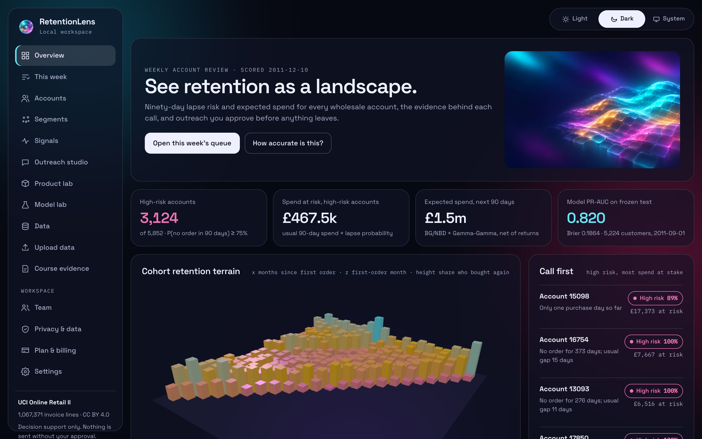
The target user is the owner or account manager of a small wholesaler with hundreds of trade accounts and no data team. Between 65% and 67% of known accounts placed no order in the following 90 days at the development cutoffs, and lapses are usually noticed only after revenue has gone.
Desk research found a gap between self-serve direct-to-consumer tools (which need e-commerce events and hundreds of buyers) and distributor platforms (quote-only, ERP-integrated). No tool combined CSV-first input, small-sample uncertainty, approval-gated AI drafts and published pricing. Buyer, workflow and price are hypotheses: no interviews or pilot have been run yet.
| Measure | Value |
|---|---|
| Invoice lines | 1,067,371 |
| Date range | 2009-12-01 to 2011-12-09 |
| Invoices · customers · countries | 53,628 · 5,942 · 43 |
| No customer ID | 243,007 (22.8%) |
| Cancellations · negative quantities | 19,494 · 22,950 |
| Duplicates (across sheets / within a sheet) | 22,202 / 12,133 |
| Rows usable for customer models | 794,163 (74.4%), 5,875 customers |
The two workbook sheets overlap on 1–9 December 2010, so the published row count includes a duplicated week. Rows are flagged, never silently dropped. The archive is SHA-256 checked (572e36277c2390fb…).
A wholesaler uploads a CSV or Excel export with one row per invoice line. The wizard guesses the column mapping (editable), then a check report counts rows read and rejected, cancellations, duplicates and date-format assumptions before anything is scored. Missing customer fields are never filled with defaults. Scoring runs in a background worker with the same seasonal model and value ranges as the reference data.
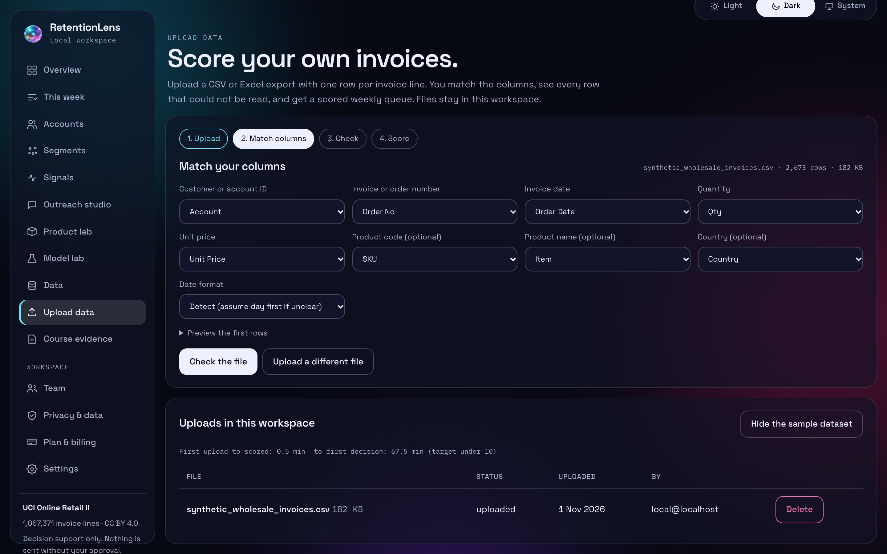
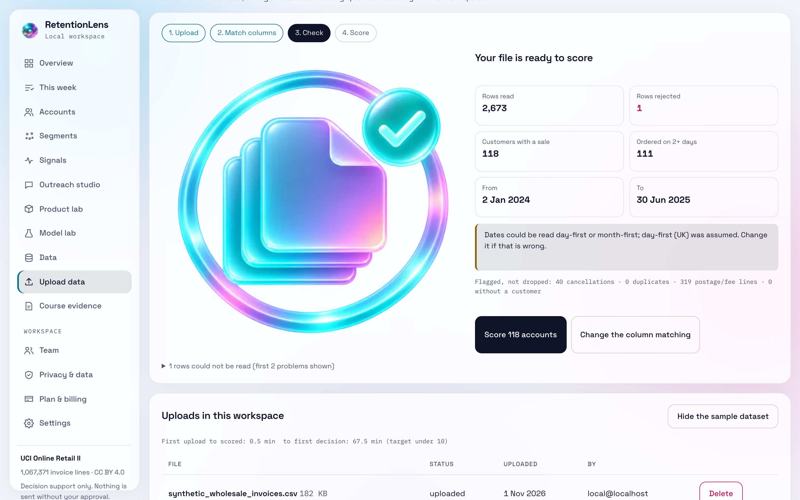
Each week the queue lists the accounts with the most spend at risk. A random share of eligible accounts (setting RL_HOLDOUT_SHARE, default 20%) is held out by a stable hash of workspace, account and week and is not shown. After the observation period the reorder rates of contacted and held-out accounts are compared with a 95% interval. No uplift result exists yet: it needs several weekly queues and later uploads from a real customer.
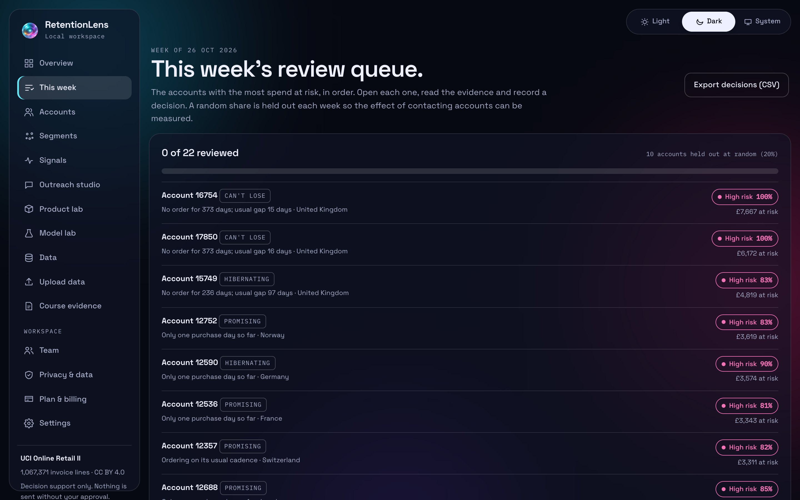
The screenshots use apps/web/public/samples/synthetic_wholesale_invoices.csv, which is SYNTHETIC. The upload was deleted after capture.
| Model | 2010-12-01 | 2011-03-01 | 2011-06-01 | 2011-09-01 (test) |
|---|---|---|---|---|
| Recency rule | 0.804 | 0.797 | 0.847 | 0.762 |
| Logistic RFM | 0.867 | 0.848 | 0.886 | 0.814 |
| BG/NBD | 0.865 | 0.848 | 0.889 | 0.820 |
| LightGBM | 0.836 | 0.826 | 0.882 | 0.819 |
| Model | 2010-12-01 | 2011-03-01 | 2011-06-01 | 2011-09-01 |
|---|---|---|---|---|
| Recency rule | 0.2777 | 0.1992 | 0.1777 | 0.2131 |
| Logistic RFM | 0.2522 | 0.1822 | 0.1642 | 0.1875 |
| BG/NBD | 0.1848 | 0.1721 | 0.1535 | 0.1864 |
| LightGBM | 0.2693 | 0.1826 | 0.1555 | 0.1938 |
| Model | 2010-12-01 | 2011-03-01 | 2011-06-01 | 2011-09-01 |
|---|---|---|---|---|
| Last 90 days | 0.768 | 0.682 | 0.758 | 0.717 |
| BG/NBD + Gamma-Gamma | 0.802 | 0.811 | 0.851 | 0.825 |
| LightGBM | 0.807 | 0.775 | 0.845 | 0.807 |
Experiment run 2026-11-01, seed 42. Models were chosen on the development cutoffs 2010-12-01, 2011-03-01, 2011-06-01 only; the 2011-09-01 window had already been scored once in P2 and appears here only as a labelled post-hoc look.
| Cutoff | Model | PR-AUC | Brier | Value MAE (£) | Total-spend bias |
|---|---|---|---|---|---|
| 2010-12-01 | BG/NBD | 0.865 | 0.1848 | 366.0 | +61.8% |
| 2010-12-01 | BG/NBD + seasonal | 0.865 | 0.1736 | 323.4 | +30.4% |
| 2010-12-01 | ZILN network | 0.862 | 0.2480 | 558.0 | +153.7% |
| 2011-03-01 | BG/NBD | 0.848 | 0.1721 | 289.8 | +28.5% |
| 2011-03-01 | BG/NBD + seasonal | 0.848 | 0.1701 | 279.8 | +19.7% |
| 2011-03-01 | ZILN network | 0.812 | 0.1873 | 329.1 | +37.3% |
| 2011-06-01 | BG/NBD | 0.889 | 0.1535 | 270.5 | +8.5% |
| 2011-06-01 | BG/NBD + seasonal | 0.889 | 0.1526 | 265.4 | +0.2% |
| 2011-06-01 | ZILN network | 0.884 | 0.1554 | 295.4 | +22.1% |
| 2011-09-01 (post hoc) | BG/NBD | 0.820 | 0.1864 | 359.7 | -33.5% |
| 2011-09-01 (post hoc) | BG/NBD + seasonal | 0.820 | 0.1785 | 360.0 | -7.1% |
| 2011-09-01 (post hoc) | ZILN network | 0.821 | 0.1862 | 372.8 | -28.7% |
| Segment | Accounts | Median net spend | Expected 90-day spend | High risk | Suggested play |
|---|---|---|---|---|---|
| Champions | 1,239 | £3,892 | £1,000,902 | 0% | Thank them, offer early access to new ranges, ask for referrals. |
| Loyal | 735 | £1,378 | £155,832 | 6% | Keep cadence; suggest complementary lines from basket rules. |
| Needs attention | 631 | £897 | £112,284 | 40% | Review the evidence before deciding. |
| Promising | 670 | £504 | £97,510 | 67% | Second-order nudge with lines they have not tried. |
| Hibernating | 1,435 | £281 | £53,126 | 100% | Low-cost reminder only; do not spend sales time. |
| New | 236 | £244 | £40,484 | 61% | Onboarding follow-up after the first delivery. |
| At risk | 689 | £573 | £32,282 | 95% | Check-in with a reason to reorder (new season, stock held). |
| Can't lose | 217 | £2,041 | £22,648 | 64% | Personal call from the account manager this week. |
k-means on log recency, frequency and spend chose k = 4 by silhouette score. The lookalike model scores customers whose first order was in the last 90 days for the chance of becoming a top-20% first-year spender: test AUC 0.821 on 1,285 later customers (time-based: earliest 70% of first-order dates train, latest 30% test).
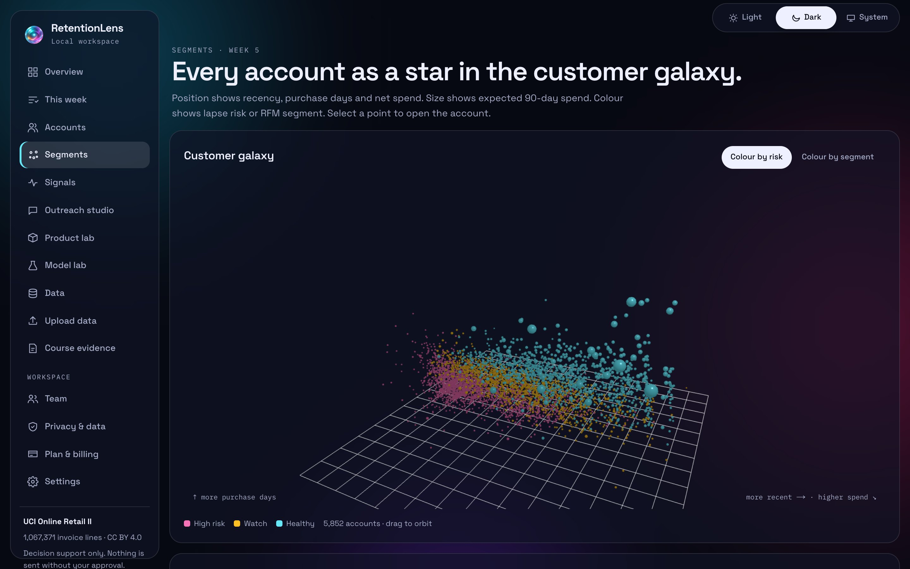
| Theme | Same-month r | r with interest 1 month later | Sales peak | Interest peak |
|---|---|---|---|---|
| Christmas | 0.34 | 0.90 | 11 | 12 |
| Candles and lights | 0.63 | 0.78 | 11 | 12 |
| Bags | 0.28 | 0.23 | 11 | 8 |
| Mugs and cups | 0.48 | 0.43 | 11 | 11 |
Wikipedia pageviews (CC0) cover 2016–2025 while invoices cover 2009–2011, so only the seasonal shape is compared. The co-purchase network links the top 120 products into 3 communities (modularity 0.183); it shows products bought together, not social influence.
Social data is synthetic. Licensed review and social sources (Yelp, Reddit, Amazon reviews) cannot be published in a public repository, so 600 posts were generated from real product names and labelled SYNTHETIC everywhere; 5 of 5 prompt-injection posts were flagged. A polite scraper (robots.txt, identifying user agent, delays, caching) collected 60 listings from the toscrape.com practice site.
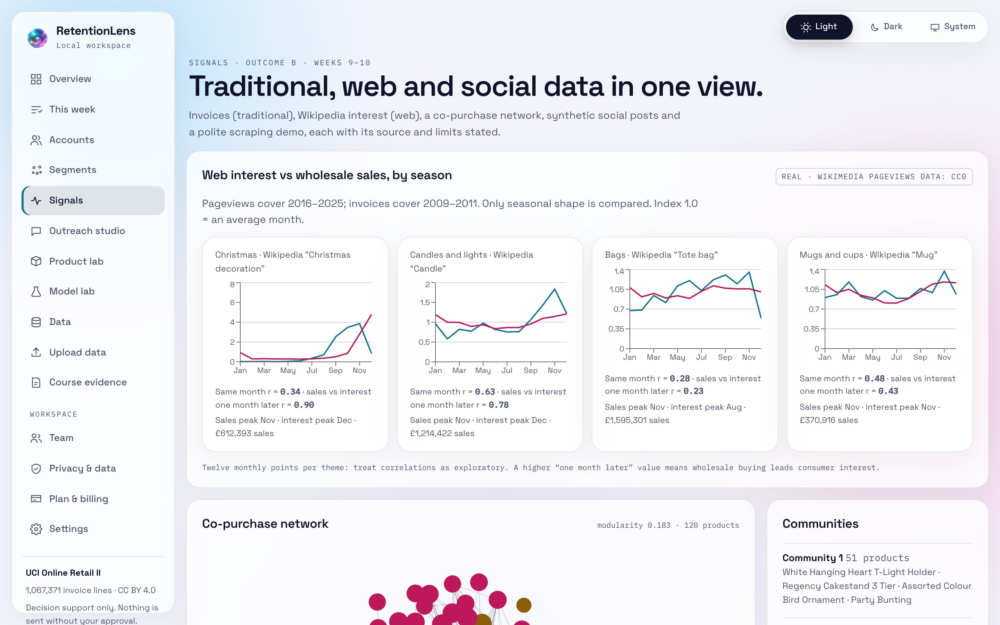
The analytics core supplies every fact; the local model (qwen2.5:7b via Ollama) only writes the words. No free text from customers or posts enters the prompt. Each draft passes a deterministic checker and a second-pass review, then needs a person to approve it with a UK PECR consent basis. Approvals are idempotent, every action is audit-logged, and there is no send tool: approved drafts are exported as CSV.
| Check (live run, 16 drafts) | Passed |
|---|---|
| Numbers match the model's facts | 15/16 |
| No pressure or false urgency | 16/16 |
| No discounts or offers | 16/16 |
| No personal contact data | 16/16 |
| Uses name placeholders | 16/16 |
| Length 40–180 words | 16/16 |
| Second-pass review (tone, manipulation) | 1/16 |
The second-pass reviewer is strict. Whether its flags are right is unknown until a person labels the drafts; the labelling sheet and scoring script (Cohen's kappa) are in the repository.
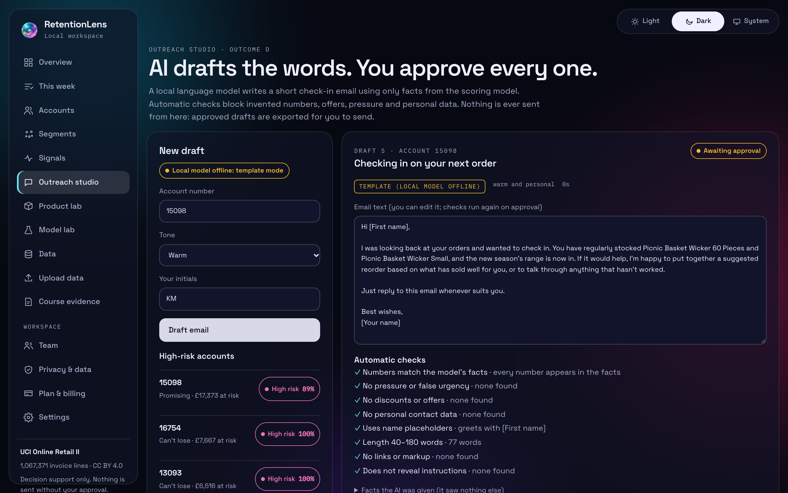
| If they buy | They also buy | Confidence | Lift |
|---|---|---|---|
| Green Regency Teacup And Saucer | Pink Regency Teacup And Saucer | 67% | 28.4× |
| Pink Regency Teacup And Saucer | Green Regency Teacup And Saucer | 84% | 28.4× |
| Bathroom Metal Sign | Toilet Metal Sign | 60% | 26.2× |
| Toilet Metal Sign | Bathroom Metal Sign | 76% | 26.2× |
| Pink Regency Teacup And Saucer | Roses Regency Teacup And Saucer | 80% | 23.9× |
| Roses Regency Teacup And Saucer | Pink Regency Teacup And Saucer | 56% | 23.9× |
Price elasticities from weekly log-log regressions come out implausibly large (around −15 to −20) because wholesale price breaks give big orders lower unit prices. They are presented as a lesson in confounding, not as pricing guidance.
| Area | What exists | Evidence |
|---|---|---|
| Workspaces and roles | One workspace per company; owner, reviewer and viewer roles; every query scoped to the workspace; sign-in throttling and weak-password refusal | 66 API tests collected |
| Row-level security | Supabase migration with Postgres policies; a two-tenant test raises on any cross-tenant read or viewer write | CI job rls applies the migration to a local Supabase stack |
| Load test | 20 concurrent users for 30 s: 10,261 requests, 342 per second, 0 errors | p95 270.9 ms vs 500 ms target (met); reports/load_test.json |
| Restore drill | Backup restored; checksum and integrity check passed; row counts matched in all 14 tables | SYNTHETIC seeded database; reports/restore_drill.md |
| LLM red team | OWASP Top 10 for LLM Applications (2025) mapped to deterministic controls | 23 cases in CI; docs/security/LLM_RED_TEAM.md |
| Browser tests | Every route, both themes, accessibility and mobile layout; one live upload → score → review → draft → approve flow | 52 static + 1 live Playwright tests |
Test counts were collected on 2026-11-01 with the commands in design/test_counts.json (61 ML, 66 API, 52 + 1 browser). The load test ran on a local machine and the restore drill on a small synthetic database; neither has run on hosted infrastructure because no Render, Supabase or Stripe account exists yet.
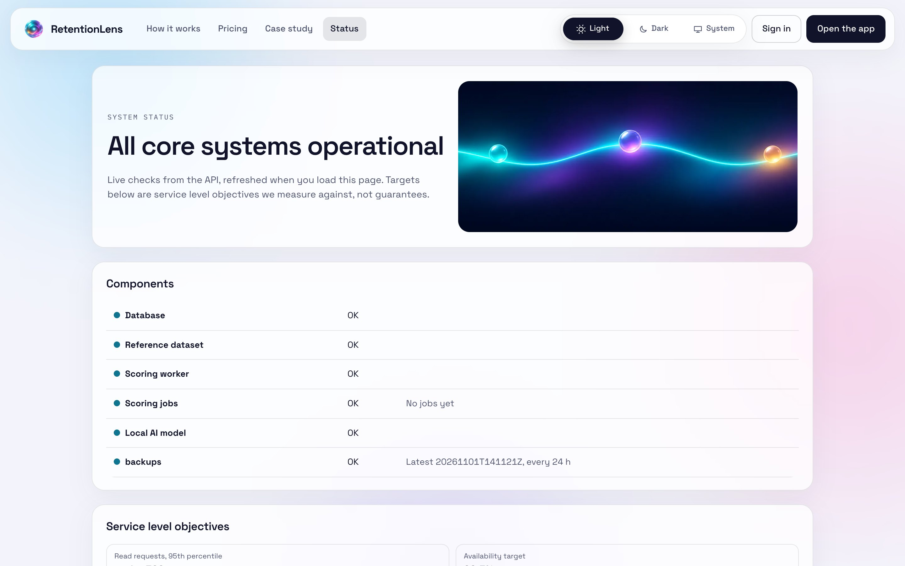
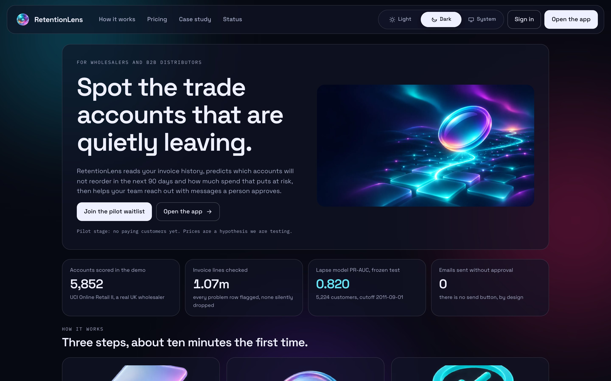
| Outcome | Evidence in RetentionLens |
|---|---|
| A · Marketing research and predictive analytics | Data profile and card; rolling-cutoff lapse models; cohort terrain |
| B · Traditional, web and social data | Wikipedia seasonality; co-purchase network; synthetic social posts; scraper |
| C · CLV, churn, retention, new customers | BG/NBD + Gamma-Gamma; RFM segments; k-means; lookalike scoring |
| D · Generative AI for marketing decisions | Outreach studio with checker, critic, consent gate and live evaluation |
| Weeks 1–11 | Mapped topic by topic on the Course evidence page |
| Labs (weeks 2, 4, 6, 8, 10) | Scaffolds and generated EVIDENCE.md in labs/ · [OWNER: lab reports to be written] |
Chen, D. (2019). Online Retail II. UCI Machine Learning Repository. doi:10.24432/C5CG6D · Fader, Hardie & Lee (2005). Counting your customers the easy way. Marketing Science 24(2) · Wang, Liu & Miao (2019). A deep probabilistic model for CLV prediction. arXiv:1912.07753 · Hwang (2019). Hands-on Data Science for Marketing. Packt · Winston (2014). Marketing Analytics. Wiley · Grigsby (2018). Marketing Analytics. Kogan Page · OWASP Top 10 for LLM Applications (2025).
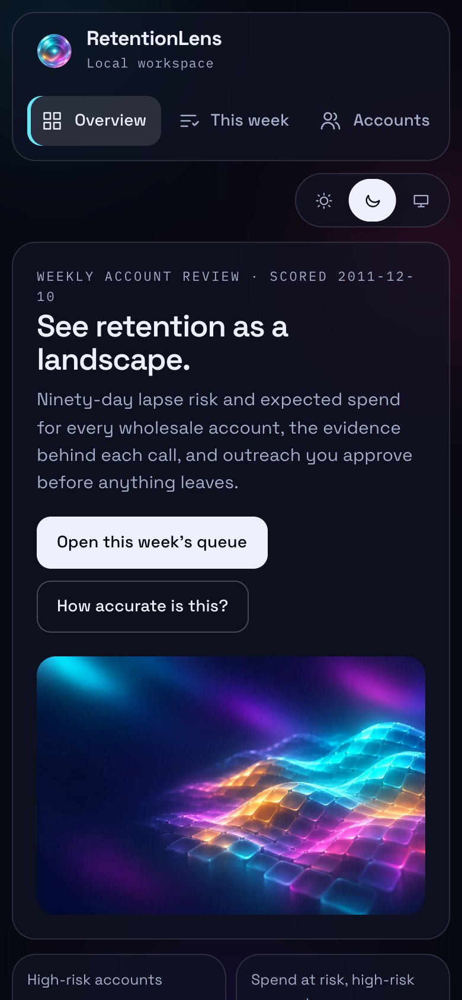
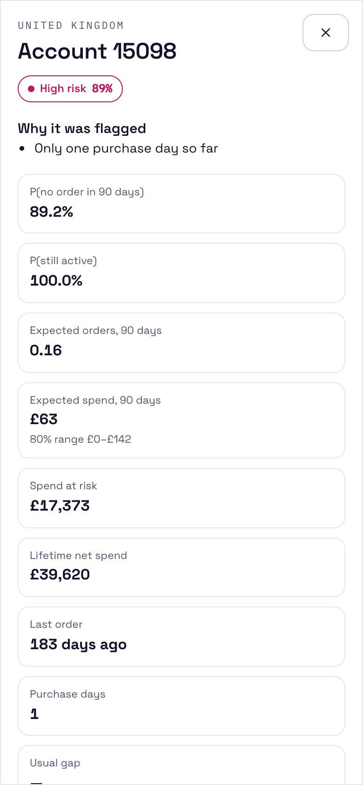
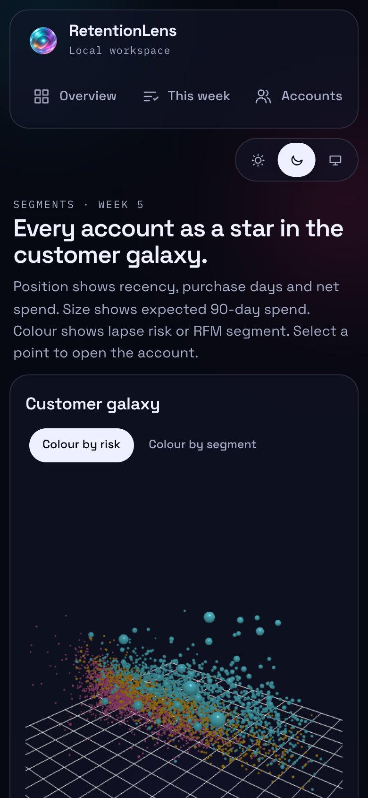
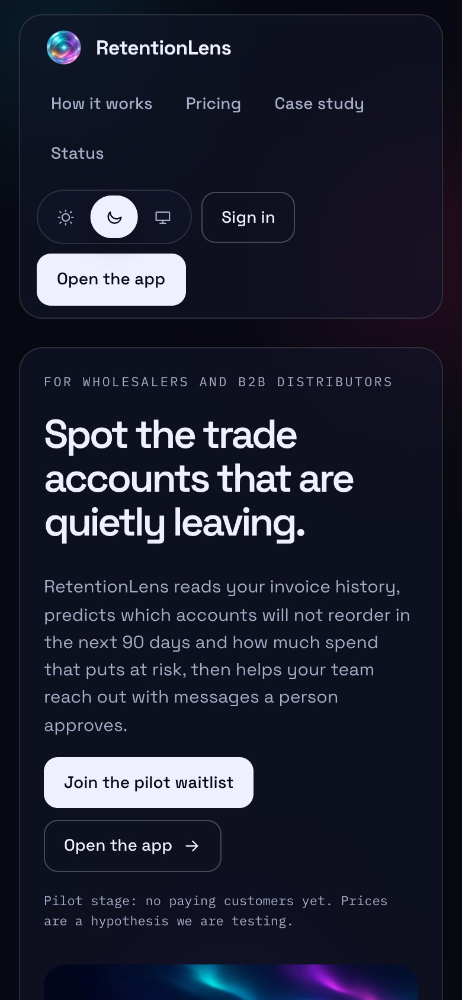
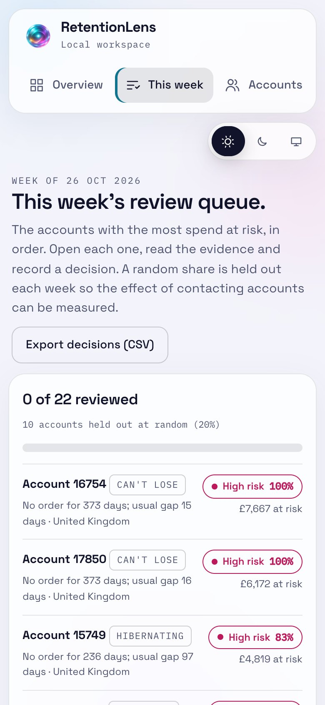
Illustrations generated by the author with ChatGPT Images (gpt-image-2). Screenshots captured from the running application on 2026-11-01.